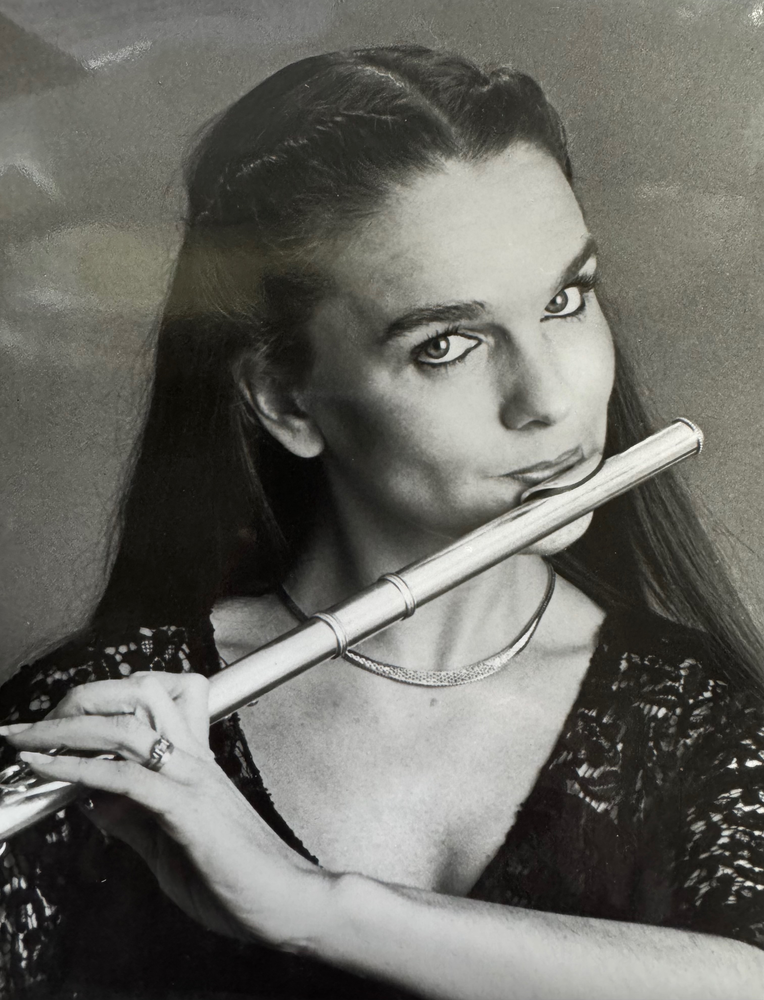
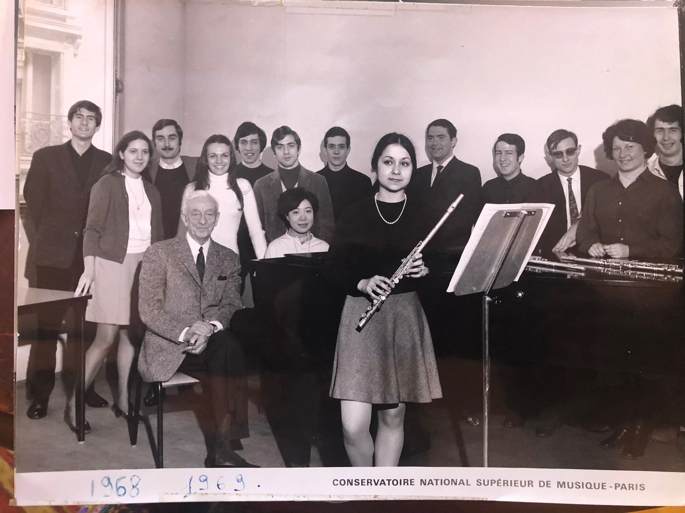
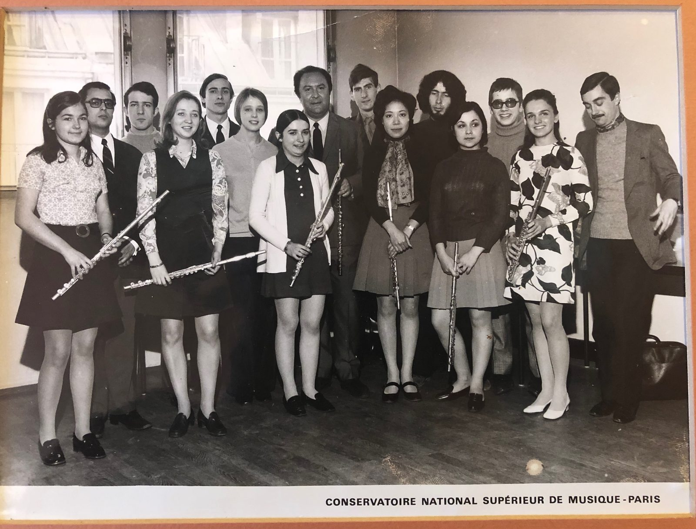
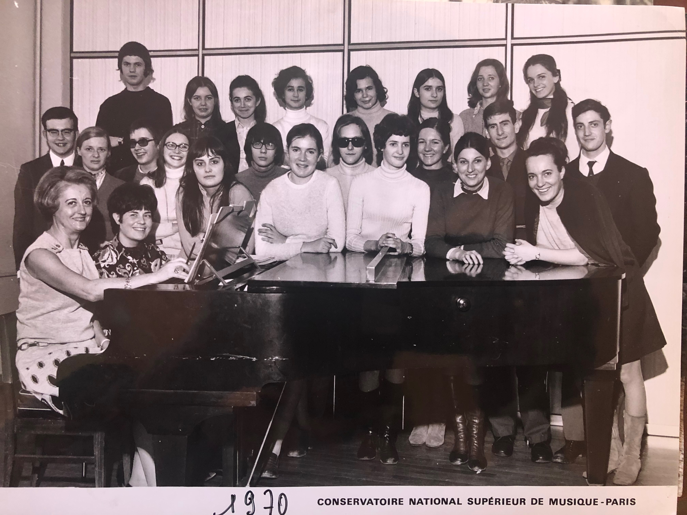
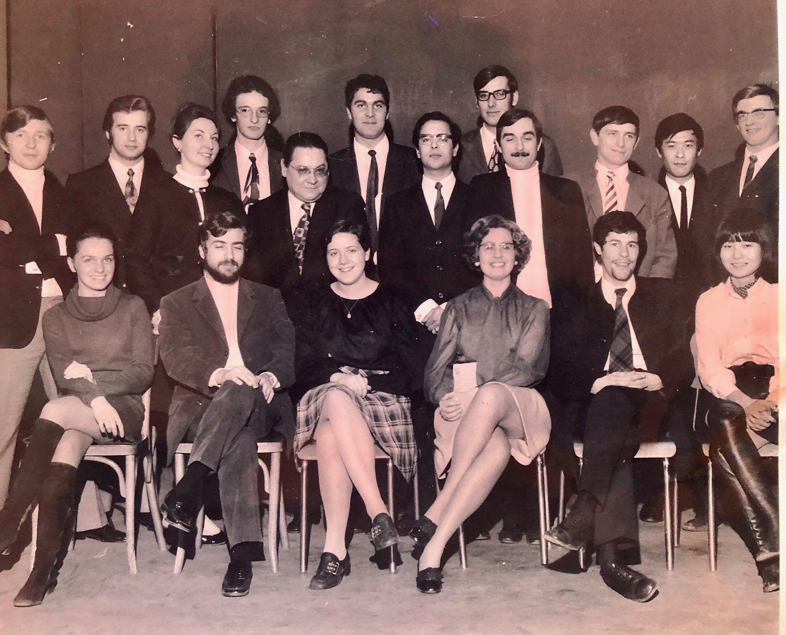
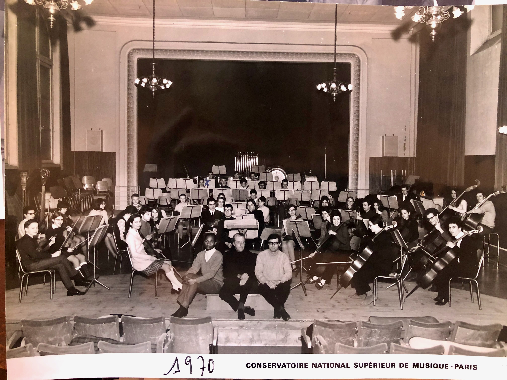
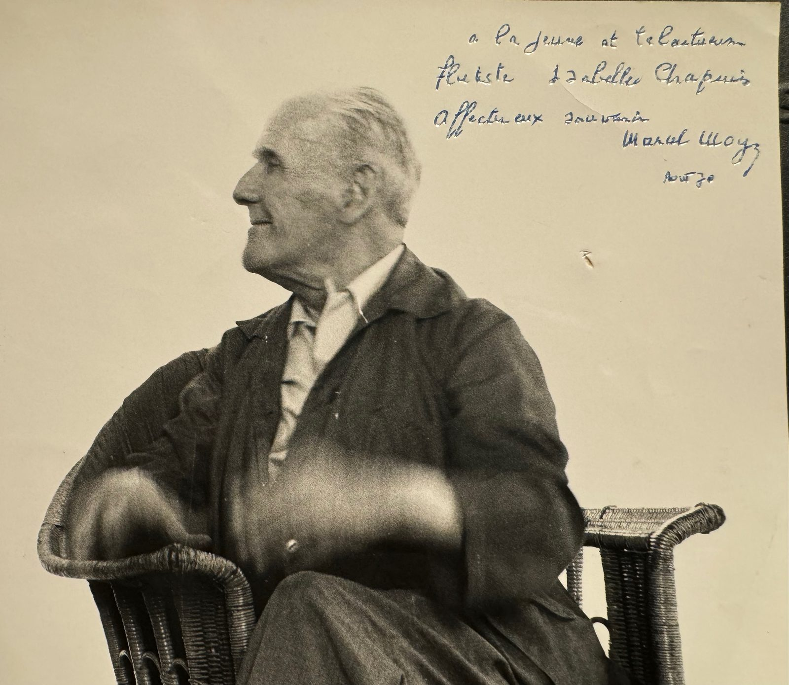
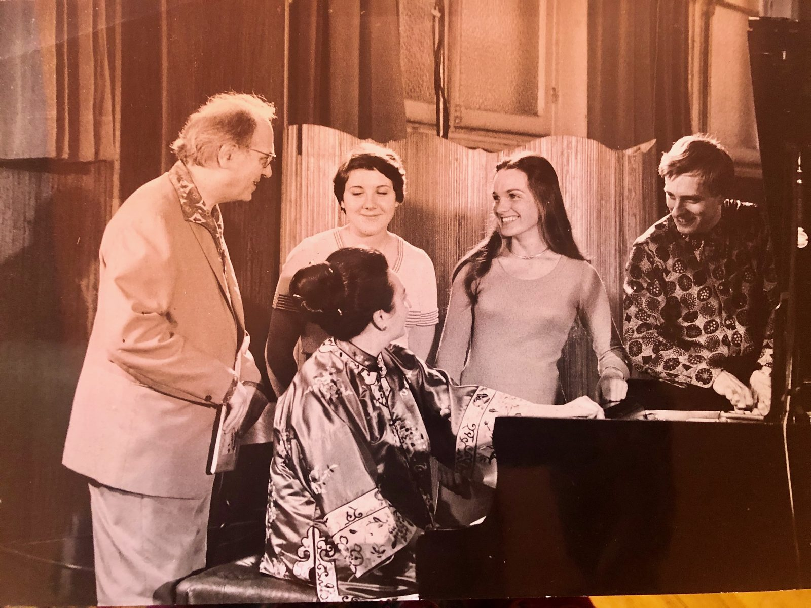

I was born in Dijon, France, where my love of the flute took root. My first teacher was Maryse Gauci, whose guidance laid the foundation for my musical life. After only a year of study with Maryse, she introduced me to Gaston Crunelle. I was fourteen years old when he accepted me as his student. I later studied at the Conservatoire de Versailles, where Roger Bourdin was professor of flute, earning the Premier Prix de Flûte in my first year. I then entered the Conservatoire National Supérieur de Musique de Paris, where I continued my studies with Gaston Crunelle before studying with Jean-Pierre Rampal, earning the Premier Prix de Flûte and the Premier Prix de Musique de Chambre. During those years, I also had the extraordinary privilege of learning from Marcel Moyse, Michel Debost, Christian Lardé, and Alain Marion. Their artistry, generosity, and devotion to music continue to influence my own teaching and performing.

In 1972, I married the American conductor Mark Starr, who had studied conducting with Franco Ferrara at the Conservatorio di Santa Cecilia in Rome. He later became assistant conductor to Igor Markevitch at the Orchestre National de Monte-Carlo and subsequently served as assistant to Jean Martinon in Belgium and the Netherlands.
We first moved to Milwaukee, where Mark was appointed Director of Orchestras at the University of Wisconsin–Milwaukee. We later settled in the San Francisco Bay Area when Mark became Director of Orchestras and Opera at Stanford University. California soon became the center of my musical life. In 1975, I began teaching at San José State University, where I would spend thirty-three years on the faculty of the School of Music, retiring in 2008 as Senior Lecturer in Flute after receiving the University President's Award for Outstanding Professional Attainment. It has been especially meaningful to watch one of my former students, Ráyo Furuta, return to San José State University as Professor of Flute. Today, I continue to teach a limited number of advanced flute students from my home studio in Los Altos.
From 1983 to 2018, I held the post of Principal Flute of Opera San José, playing in numerous performances of more than 110 operas. At various times, I also held principal flute positions with the San Francisco Chamber Orchestra under the direction of Edgar Braun and the San Jose Chamber Orchestra.

As a soloist, I have been fortunate to perform on both sides of the Atlantic. In Europe, I have appeared with the Czech Chamber Orchestra, l'Orchestre de la Jeunesse Musicale in Brussels, the Orchestre de chambre de Radio France, the Orchestre de chambre Jean-François Paillard, the Orchestre philharmonique de Dijon, and L'Ensemble instrumental du Festival Estival de Paris. In the United States, I have appeared with the San Francisco Chamber Orchestra, the Stockton Symphony, the Berkeley Symphony, the San Jose Chamber Orchestra, the Stanford Symphony, the Greensboro Symphony, the La Crosse Symphony, the San Jose Youth Symphony, and the San José State University Symphony.
Recital work has been equally important throughout my career. I have appeared on series including the Dame Myra Hess Series in Chicago (broadcast by NPR), the Cleveland Museum of Art, the Milwaukee War Memorial, Radio France and France Musique, the Legion of Honor in San Francisco, La Salle des Grands Ducs in Dijon, the National Flute Association Convention, and the California Music Teachers Association Convention.

For almost twenty years, I had the joy of sharing the stage with my dear friend and colleague, the great flutist Robert Stallman. Over the course of our twenty-year friendship, we performed many duo recitals together, one of the great joys of my musical life. Robert left us much too early, and to this day I remain grateful for his constant inspiration and long friendship. One of my most treasured musical memories was being invited by Robert to join him, harpist Katerina Englichová, and the Czech Chamber Orchestra under the direction of Ondřej Kukal for the recording of Così fan Flauti: Mozart for Flute & Orchestra, including Mozart's Concerto for Flute and Harp in C Major, K. 299.

During my years at San José State University, I also had the pleasure of performing many recitals with pianist Mark Anderson, first as my class accompanist and later as a recital partner. Today, Mark serves as Professor of Piano at the University of British Columbia, and I continue to treasure our long musical friendship.

Throughout more than fifty years of teaching, I have watched generations of students grow into accomplished artists, educators, and remarkable human beings. Nothing has given me greater satisfaction than seeing them fulfill their dreams. Their successes have been among the greatest joys of my career.

In 2013, after my student Annie Wu was named a Presidential Scholar, I was recognized by the United States Secretary of Education as one of the nation's "most influential teachers" and received a letter of recognition from President Barack Obama. In my hometown of Dijon, the Conservatoire de musique established the Concours de flûte Isabelle Chapuis, a distinction that holds special meaning for me.
The San Francisco Chronicle once described me as "French to her fingertips" and wrote that I was "a sensation...performing with surety and technical control that recalled her famous teacher, Jean-Pierre Rampal." I was the subject of a cover story in Flute Talk magazine, and in 2022 The International Musician, the magazine of the American Federation of Musicians, featured my career in an article titled "A Flutist's Perfect Life." My work is also included in Leonard Garrison's biography of my first Paris Conservatory teacher, Gaston Crunelle. I was recently interviewed by flutist Robert Cart and was honored to be invited by the distinguished French piccoloist Jean-Louis Beaumadier to serve as a juror for the flute competition at the Conservatoire de musique in Marseille, France.

Looking back, I feel deeply grateful—for the teachers who believed in me and guided me, the colleagues who inspired me, the audiences who listened, and especially the students who entrusted me with a part of their musical journey. Music has given me a lifetime of friendships, discovery, and purpose, and I look forward to continuing to share those gifts with others.